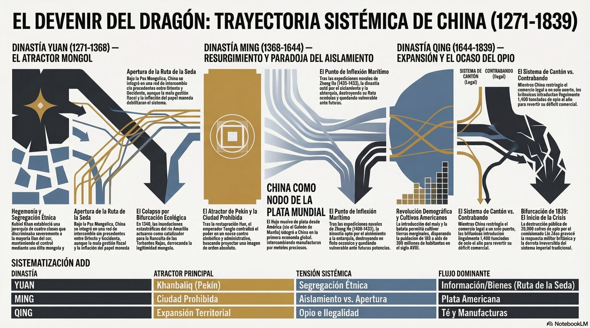

De la capital de Kublai Khan a la destrucción del opio en Cantón: cómo China fue conquistada dos veces, asimiló a sus conquistadores, y llegó desarmada al umbral del mundo moderno.
Este análisis combina dos marcos complementarios: la Matriz Explicacionista de Evaluación Epistémica (MEEE-G) para clasificar el estatus de cada afirmación, y la Antropología Dinámica del Devenir (ADD) para interpretar los procesos históricos como sistemas complejos.
Cada afirmación en el texto lleva una etiqueta que indica qué tan sólida es la evidencia que la sostiene.
La ADD trata los fenómenos históricos como sistemas complejos no lineales, usando categorías de la termodinámica de sistemas alejados del equilibrio.
| ADD | Antropología Dinámica del Devenir — marco teórico principal |
| MEEE-G | Matriz Explicacionista de Evaluación Epistémica de Goldman |
| ANCA-ADD | Agente Noticioso Crítico de Actualidad — Análisis Dinámico del Devenir |
| a.C. / d.C. | Antes de Cristo / Después de Cristo |
| UCR | Universidad de Costa Rica |

La historia comienza donde terminó la Parte I: en la estepa. DC La dinastía Yuan fue fundada por Kublai Khan (1215-1294), nieto de Gengis Khan, quien completó la conquista de China iniciada por su abuelo. En 1271, Kublai proclamó oficialmente el nombre dinástico "Gran Yuan" y, en 1279, tras la decisiva batalla naval de Yamen —donde los últimos leales de la Song del Sur se arrojaron al mar junto con los archivos de la corte antes que rendirse—, China quedó unificada por primera vez bajo dominio extranjero.
Kublai trasladó la capital a Khanbaliq (la actual Pekín) y adoptó el título de emperador chino, aunque mantuvo también su posición de Gran Khan del Imperio Mongol: era al mismo tiempo Hijo del Cielo y gobernante de la estepa, dos mundos que ningún hombre antes había intentado gobernar simultáneamente.
DC La administración Yuan implementó un sistema de segregación étnica en cuatro clases: mongoles en la cima (la élite gobernante), semu —asiáticos centrales y occidentales, incluyendo persas y turcos— en el segundo escalón y a cargo de las finanzas, han del norte en el tercero, y nan —los chinos del sur, los más numerosos— en la base, como los más discriminados. Aunque los mongoles ocupaban los puestos superiores, la burocracia operaba con estructuras chinas: la Secretaría Imperial y la Censoría se mantuvieron porque sin ellas el imperio era simplemente ingobernable. El budismo tibetano fue elevado a religión oficial, aunque se toleraron el confucianismo, el taoísmo, el islam y hasta el cristianismo nestoriano. Marco Polo era, en esta jerarquía, un semu privilegiado.
El período Yuan fue testigo de la Pax Mongolica: la paz impuesta por el dominio mongol desde Pekín hasta Persia que permitió un intercambio comercial sin precedentes. DC La Ruta de la Seda terrestre se reabrió completamente; viajeros como Marco Polo podían recorrer el continente con relativa seguridad. Avanzaron las matemáticas, la astronomía y la imprenta. Pero esa misma red de caminos que facilitaba el comercio facilitaba también la enfermedad: IP la Muerte Negra que devastó Europa a partir de 1347 probablemente inició su recorrido en las estepas centroasiáticas bajo control mongol.
Sin embargo, el régimen enfrentó crecientes dificultades. DC La emisión masiva de papel moneda sin respaldo metálico provocó inflación crónica. Las élites mongolas, en lugar de mantenerse austeras, adoptaron los lujos de la corte china y se endeudaron. Los impuestos excesivos sobre el campesinado han acumularon un descontento que necesitaba solo una chispa. Las inundaciones catastróficas del río Amarillo en la década de 1340 —que cambiaron su curso y anegaron millones de hectáreas— fueron esa chispa. El trabajo forzado para construir las defensas y desviar las aguas agotó lo que quedaba de la paciencia popular.
El experimento Yuan de administración multiétnica con jerarquías rígidas ilustra los límites de la legitimidad sostenida solo por la coerción. Costa Rica, como país multiétnico —mestizos, afrodescendientes, indígenas, inmigrantes—, enfrenta el desafío contrario: construir instituciones que integren en lugar de jerarquizar. La experiencia Yuan sugiere que la legitimidad de largo plazo depende de la percepción de justicia distributiva.
La inflación del papel moneda Yuan también habla: la emisión monetaria sin respaldo institucional sólido genera espirales de desconfianza. El caso es relevante para cualquier economía que experimenta presión inflacionaria sostenida sin reforma fiscal estructural.
China ardía desde varios frentes. DC La Revuelta de los Turbantes Rojos (红巾起义) estalló en 1351 en las provincias de Hebei y Anhui, encabezada por Han Shantong y Liu Futong. Sus seguidores se envolvían la cabeza con tela roja como señal de identidad mesiánica: eran devotos de la secta del Loto Blanco, una fusión sincrética de budismo, maniqueísmo y creencias populares que prometía la venida de Maitreya —el Buda del futuro— para restaurar el orden. El hambre, los impuestos y la indignación ante el dominio mongol convirtieron esa promesa religiosa en combustible político de la más alta temperatura.
La revuelta era en realidad un archipiélago de rebeliones regionales que competían entre sí tanto como contra los Yuan. Entre todos los líderes que emergieron de ese caos, uno sobresalió: Zhu Yuanzhang (1328-1398), un campesino huérfano que había sido monje budista y más tarde mendigo antes de unirse a los rebeldes. Combinaba la dureza de quien ha sobrevivido al límite con una inteligencia política poco común. DC Tras años de lucha tanto contra los mongoles como contra sus propios rivales rebeldes, Zhu emergió victorioso. En 1368, sus fuerzas tomaron Dadu —la capital Yuan— y Zhu se proclamó Hongwu, primer emperador de la nueva dinastía Ming, que significa "Brillante".
Los mongoles no fueron destruidos militarmente: se retiraron al norte, a las estepas donde seguían siendo invencibles, y continuarían siendo una amenaza durante generaciones. Lo que colapsó fue su legitimidad moral. Las inundaciones del Amarillo fueron interpretadas, en el marco confuciano, como la señal de que el Cielo había retirado su mandato a una dinastía que no había podido gestionar la catástrofe.
La Revuelta de los Turbantes Rojos demuestra cómo los movimientos mesiánicos pueden canalizar el descontento agrario en contextos de crisis ecológica y fiscal. Costa Rica, aunque sin esa escala de conflicto, ha experimentado tensiones entre desarrollo agrícola y conservación ambiental, así como movimientos sociales que reclaman una distribución más equitativa de los recursos. La lección es que la resiliencia institucional depende de la capacidad del Estado para gestionar la crisis antes de que la legitimidad se agote.
Hongwu —el ex-campesino, ex-monje, ex-mendigo convertido en Hijo del Cielo— gobernó con la desconfianza profunda de quien sabe que el poder puede quitarse. DC Abolió el cargo de primer ministro, concentrando toda la decisión en sus propias manos. Creó los Jinyi Wei, la guardia de seda bordada: una red de espionaje interno para vigilar a sus propios funcionarios. Estableció la capital en Nankín, redistribuyó tierras entre los campesinos que le dieron la victoria, y restauró los exámenes imperiales como única vía de ascenso burocrático, devolviendo a los letrados confucianos su centralidad.
Su nieto Yongle (r. 1402-1424) fue el polo opuesto en carácter —aunque no en autoritarismo. Usurpó el trono en una guerra civil, trasladó la capital a Pekín —señal de que el norte seguía siendo el centro simbólico del poder— y construyó la Ciudad Prohibida, el complejo palaciego más grande de la historia, en el corazón de la ciudad. DC Yongle patrocinó los siete grandes viajes del almirante eunuco Zheng He (1371-1433): flotas de hasta trescientos barcos y veintiocho mil hombres que recorrieron el Sudeste Asiático, la India, el Golfo Pérsico y la costa oriental de África entre 1405 y 1433. No eran misiones de conquista ni de colonización, sino de demostración de poderío y de reconocimiento del orden sinocéntrico del mundo. Donde los europeos iban con cañones a imponer tratados, los chinos iban con seda y porcelana a recibir tributo.
Después de Yongle, algo extraño ocurrió: China se cerró sobre sí misma. DC Los sucesores cancelaron las expediciones navales, destruyeron los astilleros y prohibieron la construcción de barcos oceánicos de más de dos mástiles. H Las causas exactas siguen debatiéndose: ¿victoria de los burócratas confucianos que veían el comercio marítimo como disruptivo del orden social? ¿Un cálculo de costos-beneficios que consideraba las flotas demasiado costosas? ¿La amenaza de los piratas japoneses (wakō) en las costas? Probablemente todas a la vez. Lo que sí es claro es que esta decisión fue un punto de inflexión que dejaría a China sin capacidad naval cuando los europeos llegaran con barcos de guerra siglos después.
La economía Ming, mientras tanto, se transformó radicalmente por un flujo que nadie había diseñado: la plata americana. DC El comercio con los portugueses en Macao (desde 1557) y con los galeones españoles a través de Manila conectaron la plata de Potosí y de México con los mercados chinos. China exportaba seda, porcelana y té —productos de altísimo valor— e importaba plata en cantidades astronómicas. Se estima que entre el 30% y el 50% de toda la plata producida en América entre 1500 y 1800 terminó en China. Paradójicamente, la China que se cerró al mundo por el norte se convirtió en el principal nodo de la primera economía verdaderamente global.
A lo largo del siglo XVI, los Ming enfrentaron la presión de los piratas japoneses en las costas y de los mongoles en el norte, lo que llevó a la reconstrucción y fortificación de la Gran Muralla en su forma actual —más imponente pero también más síntoma de fragilidad que de fortaleza. A finales del siglo XVI, la llegada de misioneros jesuitas europeos, como el matemático y astrónomo Matteo Ricci, introdujo conocimientos occidentales en la corte, aunque su influencia nunca trascendió más allá de un círculo pequeño de letrados fascinados.
La caída de los Ming no fue el resultado de un único golpe: fue la sincronización fatal de varios factores simultáneos. DC A mediados del siglo XVII, la dinastía enfrentaba rebeliones campesinas masivas alimentadas por el hambre y los impuestos, una crisis fiscal crónica, corrupción endémica en la burocracia, y la presión militar de los manchúes en el noreste. La "Pequeña Edad de Hielo" —un enfriamiento global documentado por historiadores climáticos— había reducido las cosechas durante décadas, multiplicando el hambre y la inestabilidad social.
El líder rebelde Li Zicheng (1606-1645), un antiguo cartero convertido en comandante, fue quien asestó el golpe visible. En abril de 1644, sus fuerzas tomaron Pekín. El último emperador Ming, Chongzhen, se colgó de un árbol en el Jardín Imperial antes de que los rebeldes entraran al palacio —la muerte de un hombre que sabía que había perdido el Mandato del Cielo. Su nota de suicidio, según las crónicas, culpaba a sus ministros, no a sus políticas.
Li Zicheng no pudo consolidar su victoria. El general Ming Wu Sangui, que comandaba las tropas en el paso de Shanhaiguan —donde la Gran Muralla llega al mar—, tomó la decisión que cambiaría el curso de la historia: en lugar de someterse al rebelde campesino, abrió las puertas de la Muralla al príncipe manchú Dorgon. DC El 6 de junio de 1644, las fuerzas manchúes entraron en Pekín y establecieron la dinastía Qing —"Pura" en chino— que gobernaría China hasta 1912. La resistencia Ming del sur, liderada por figuras como Koxinga (Zheng Chenggong), quien estableció un reino en Taiwán, continuó durante décadas pero terminó cayendo en 1683.
DC Los manchúes impusieron marcadores físicos de sumisión: la queue o coleta, que los varones Han estaban obligados a usar bajo pena de muerte, y la prohibición de matrimonios mixtos. Pero al mismo tiempo adoptaron las instituciones confucianas, los exámenes imperiales, la burocracia Han. IP El patrón era idéntico al Yuan: el conquistador necesita al conquistado para gobernar, y en ese proceso cultural de asimilación, el conquistador termina siendo absorbido.
La conquista manchú es un ejemplo de cómo un grupo minoritario puede gobernar una mayoría mediante la cooptación de élites y la preservación de instituciones existentes. Costa Rica, como país multiétnico, enfrenta el desafío contrario: construir una identidad nacional inclusiva que respete la diversidad cultural sin fragmentación política. La experiencia Qing sugiere que la legitimidad de un gobierno depende de su capacidad para ofrecer estabilidad y prosperidad, no solo coerción.
La Alta Qing —el período desde la conquista hasta las Guerras del Opio— es uno de los momentos de mayor prosperidad y expansión en la historia china. Tres emperadores la definieron. DC Kangxi (r. 1661-1722) sofocó la rebelión de los Tres Feudos —señores de guerra que habían recibido Yunnan, Guangdong y Fujian a cambio de su colaboración en la conquista—, anexó Taiwán en 1683, y derrotó a los mongoles Zungaros en el oeste expandiendo el dominio imperial hacia el Tibet y Xinjiang. Yongzheng (r. 1722-1735) consolidó la burocracia y redujo la corrupción mediante reformas administrativas notables. Qianlong (r. 1735-1796) completó las conquistas territoriales, creando el imperio más extenso jamás gobernado desde Pekín: más de 14.7 millones de km².
La población china se disparó de forma sin precedentes. DC De unos 100 millones a principios del siglo XVIII pasó a más de 300 millones a finales del mismo siglo. El motor invisible fue la introducción de cultivos americanos: el maíz, la batata, el maní y el tabaco, llegados de las Américas vía las rutas comerciales del Pacífico, podían cultivarse en tierras marginales donde el arroz y el mijo no prosperaban. Esas laderas estériles se convirtieron en campos alimentando millones de bocas nuevas.
El comercio exterior, aunque oficialmente restringido al puerto de Cantón desde 1757 mediante el llamado Sistema de Cantón, florecía. DC China exportaba té, seda y porcelana —productos de alto valor— e importaba plata a cambio. El arte Qing alcanzó niveles de refinamiento notable; la chinería se extendió por Europa, donde la aristocracia coleccionaba porcelana de Jingdezhen. China era el mayor exportador mundial de manufacturas; la plata era su moneda universal.
Pero bajo la superficie de prosperidad se gestaban problemas estructurales. DC La corrupción burocrática era rampante, especialmente bajo el anciano Qianlong, cuyo favorito, el eunuco Heshen, acumuló una fortuna personal equivalente a varios años de ingresos totales del Estado. La presión demográfica sobre la tierra generaba masas de campesinos sin tierras y desigualdad creciente. IP Y el poder militar Qing, formidable en el siglo XVIII, se estancó tecnológicamente mientras las potencias europeas desarrollaban armas de fuego avanzadas y barcos propulsados a vapor. La brecha se abría en silencio, sin que nadie en la corte de Pekín lo advirtiera.
Desde 1757, el comercio europeo en China quedó legalmente confinado a un solo punto: el puerto de Cantón (Guangzhou). DC Los comerciantes extranjeros solo podían operar durante la temporada comercial (octubre-marzo), residir en factorías designadas a orillas del río Perla y tratar exclusivamente con el gremio de mercaderes chinos conocido como el Co-hong (o gonghang), que actuaba como intermediario y garante de los impuestos aduaneros. El sistema funcionaba razonablemente bien para ambas partes: China mantenía control estricto sobre el comercio; los europeos tenían acceso a los codiciados productos chinos.
El problema era el déficit comercial crónico de Gran Bretaña. Los ingleses bebían té sin parar —desde principios del siglo XVIII el consumo popular de té se había disparado en toda la sociedad, no solo entre la aristocracia— pero China no quería nada de lo que Gran Bretaña producía: lana, metales, manufacturas industriales. La célebre misión del Lord Macartney en 1793, que llegó a Pekín cargada de las mejores muestras de la industria británica, recibió del emperador Qianlong una respuesta memorable: "El Celeste Imperio posee todo en abundancia. No valoramos las cosas extrañas o ingeniosamente hechas, y no tenemos uso para los productos de vuestra manufactura." Los ingleses tenían que pagar el té con plata, y la plata fluía sin retorno hacia China.
La solución británica fue tan brillante en su cinismo como devastadora en sus consecuencias. La Compañía Británica de las Indias Orientales tenía el monopolio del opio cultivado en Bengala (India). DC Los comerciantes británicos comenzaron a contrabandear esa sustancia en los puertos chinos a pesar de que el opio estaba prohibido por la legislación china desde 1729. El contrabando creció exponencialmente: de unas pocas toneladas anuales a principios del siglo XIX a más de 1,400 toneladas por año hacia 1838. El flujo de plata se invirtió: ahora China la pagaba para comprar opio.
El costo social era catastrófico. DC La adicción al opio se extendía por todas las capas de la sociedad china —del ejército a la burocracia, de los puertos al campo—, debilitando la productividad y la cohesión social. La fuga de plata provocaba deflación y crisis de liquidez en una economía donde el metal era la base del sistema fiscal. La corrupción de los funcionarios encargados de interceptar el contrabando erosionaba la burocracia desde adentro. El problema se retroalimentaba: cuantos más funcionarios sobornaban los traficantes, más opio entraba; cuanto más opio entraba, más plata salía; cuanta más plata salía, más difícil era recaudar impuestos para pagar a los funcionarios.
El emperador Daoguang, alarmado, nombró al comisionado imperial Lin Zexu (1785-1850) para erradicar el tráfico con poderes extraordinarios. DC En 1839, Lin llegó a Cantón, confiscó más de 20,000 cofres de opio (unas 1,200 toneladas) y los destruyó públicamente mezclándolos con sal y cal antes de arrojarlos al mar durante 23 días. Exigió a los comerciantes británicos una garantía escrita de que no volverían a traficar. El gobierno británico, bajo el primer ministro Lord Melbourne, consideró la destrucción de propiedad privada sin compensación como un acto de guerra. La Royal Navy fue enviada a las costas chinas, y en 1840 comenzó la Primera Guerra del Opio (1839-1842), que marcaría el inicio del "siglo de las humillaciones".
Desde la perspectiva de la ADD, el período 1271-1839 puede interpretarse como un ciclo de dominación extranjera, resurgimiento nativo, nueva dominación extranjera y declive autoinfligido:
Nota metodológica: El análisis combina evaluación epistémica explicacionista (MEEE-G) y análisis dinámico antropológico (ADD); no constituye predicción determinista ni recomendación política. La selección de períodos y eventos busca reflejar los puntos de inflexión y los acoplamientos sistémicos más relevantes para comprender la evolución de China como civilización y sus implicaciones para un nodo periférico como Costa Rica.